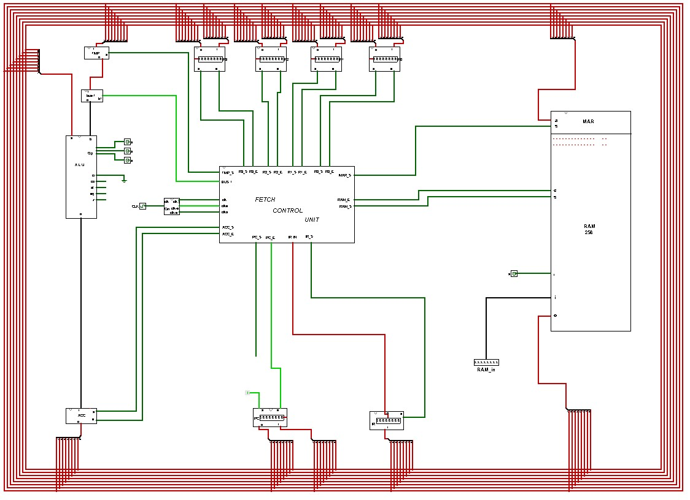

Assignment 13 — The Whole Machine
100 points | Week 13 | Logisim Checkpoint 6 + Canvas quiz | Due Sunday 11/15, 11:59 pm
What you submit
| Part | What it is | How | Points |
|---|---|---|---|
| A | Logisim Checkpoint 6 — the program counter, instruction register and RAM on the bus, fetch wired, and the week’s program running from RAM | .circ file + 10 screenshots + the program in your submission comment | 60 |
| B | Canvas quiz on the four Week 13 pages | in Canvas: 10 questions, auto-graded | 40 |
Part A — Logisim Checkpoint 6 (60 points)
Two small new tabs, a few new lines in CONTROL_UNIT, and changes to your CPU tab so that the CPU fetches its own instructions. Pages 1–3 of this week explain every wire; read them first.
REGISTER_8BIT and MEM_8BIT from Week 5; RAM_16X16 from Week 8; the bus, R0–R3, ACC, TMP, BUS1, FLAGS and REG_SELECT from Week 10; CLOCK, STEPPER and CONTROL_UNIT from Week 11. Instantiate them. Do not rebuild them.
Tab PC_REGISTER (new) — these pin names are exact
| Pin | Width | Direction | Position and meaning |
|---|---|---|---|
s | 1 | in | top — set, from the control unit |
e | 1 | in | top — enable, from the control unit |
i | 8 | in | bottom — from the bus |
o | 8 | out | bottom — to the bus |
reg | 8 | out | left — the stored byte, for a probe |
Inside: one REGISTER_8BIT instance, each pin wired straight to the matching one. Edit the appearance so s and e sit on top and i and o on the bottom, as in the figure on page 1 — the same kind of wrapper as Week 10’s CPU_REGISTER.
Tab IR (new) — these pin names are exact
| Pin | Width | Direction | Position and meaning |
|---|---|---|---|
i | 8 | in | bottom — from the bus |
s | 1 | in | right — set |
o | 8 | out | top — to the control unit’s ir |
Inside: one MEM_8BIT instance. No enable and no output buffer: the IR never drives the bus (page 1, §13.3).
Tab CONTROL_UNIT — what changes
Add five outputs, pc_e, pc_s, mar_s, ram_e and ir_s (1 bit each), and give three existing lines a fetch term. The whole table, with the changes in bold:
| Output | = |
|---|---|
| pc_e | step1 AND clk_e |
| mar_s | step1 AND clk_s |
| ram_e | step2 AND clk_e |
| ir_s | step2 AND clk_s |
| pc_s | step3 AND clk_s |
| regb_e | step4 AND ALU AND clk_e |
| tmp_s | step4 AND ALU AND clk_s |
| rega_e | step5 AND ALU AND clk_e |
| acc_s | ( step1 OR (step5 AND ALU) ) AND clk_s |
| flags_s | ( (step5 AND ALU) OR (step4 AND CLF) ) AND clk_s |
| acc_e | ( step3 OR (step6 AND ALU AND NOT CMP) ) AND clk_e |
| regb_s | step6 AND ALU AND NOT CMP AND clk_s |
| bus1 | step1 OR (step4 AND CLF) |
| opcode | ir bits 6–4, each AND (step5 AND ALU) — unchanged |
Five new ANDs and three new OR inputs. No fetch gate takes an ir bit (page 2, §13.7). Put the new outputs where their wires want to go: the PC’s lines toward the bottom, the RAM’s toward the right.
Tab CPU — what changes
- Place one
PC_REGISTERon the bottom run of the bus (iandoto the loops, bit 0 innermost), oneIRbeside it (ifrom the bus), and yourRAM_16X16on the right (addressandifrom the bus,oto the bus). - Delete the
irinput pin. WireIR’sotoCONTROL_UNIT’sir. - Wire
pc_eto the PC’seandram_eto the RAM’se. - Add the
rungate: a new inputrun;CLOCK’sclk_eandclk_seach pass through an AND withrunon their way toCONTROL_UNIT.clkgoes straight to the control unit as before. - Add the loading pins and ORs: the PC’s
s=pc_sORdata_pc; the IR’ss=ir_sORdata_ir; the RAM’ssa=mar_sORdata_mar; the RAM’ss=data_ram; the RAM’sreset=ram_reset. Keepdata,data_e,data_sandci(still 0) from Weeks 10–11. - Every new input pin is 1 bit with pull-down:
run,data_pc,data_ir,data_mar,data_ram,ram_reset. - Probes on the PC’s
regand the IR’so, as well as everything you probed in Week 11.

s comes from pc_s OR data_pc, not a constant; the RAM’s i comes from the bus, not a pin; and clk_e and clk_s pass through the run ANDs.The program
MOV R0, R2 then SUB R1, R2 — copy R0 into R2, then subtract R1 from it (page 3, §13.11). With R0 = 7, R1 = 3 and R2 = 0 to start, R2 ends at 4.
| Address | Byte | Instruction | Part of |
|---|---|---|---|
| 0x00 | 10110010 | NOT R0, R2 | MOV R0, R2 |
| 0x01 | 10111010 | NOT R2, R2 | MOV R0, R2 |
| 0x02 | 10111010 | NOT R2, R2 | SUB R1, R2 |
| 0x03 | 10000110 | ADD R1, R2 | SUB R1, R2 |
| 0x04 | 10111010 | NOT R2, R2 | SUB R1, R2 |
Loading it, with run = 0
data=00000000,data_e= 1, pulseram_reset— every RAM byte is now 0.- For each address:
data= the address, pulsedata_mar;data= the byte, pulsedata_ram. Five times. data=00000000, pulsedata_pc.data=10000000, pulsedata_ir;data=00000111, pulsedata_s— R0 = 7. Then10000001/00000011for R1 = 3, and10000010/00000000for R2 = 0.data_e= 0. Thenrun= 1.
Page 3 lists the same sequence pin by pin. Load registers and the PC only while run is 0.
Verify, and screenshot each step
Every input starts at 0. “Click clk_in” means change it once. steps reads with step 1 at the right. Each step continues from the one before.
| # | Do | Expect |
|---|---|---|
| 1 | Simulate → Reset; run = 0 | steps = 0000001; PC, IR and R0–R3 show EEEEEEEE |
| 2 | Load the program and registers as above | PC = 00000000; R0 = 00000111; R1 = 00000011; R2 = 00000000; IR = 10000010 |
| 3 | Right-click RAM_16X16 → View RAM_16X16 | bytes 0x00–0x04 show 10110010 10111010 10111010 10000110 10111010. Then Simulate → Go Out To State → CPU to return |
| 4 | run = 1 | bus = 00000000 (the PC driving); clk_e = 1 |
| 5 | Click clk_in once | ACC = 00000001 |
| 6 | 4 more clicks (5 in all) | steps = 0000010; IR = 10110010; bus = 10110010 |
| 7 | 4 more (9 in all) | steps = 0000100; PC = 00000001; bus = 00000001 |
| 8 | 15 more (24 in all) | steps = 0000001; R2 = 11111000 |
| 9 | 24 more (48 in all) | R2 = 00000111 — MOV done; PC = 00000010 |
| 10 | 72 more (120 in all) | R2 = 00000100 — SUB done; PC = 00000101; R0 = 00000111; R1 = 00000011 |
If a value is wrong, do not click on: page 4’s tracing method and symptom table will find it faster.
In your Canvas submission comment
List the five bytes you loaded, in hex, each with its instruction — for example 0x00: B2 NOT R0, R2.
Points
| Criterion | Points |
|---|---|
PC_REGISTER: five pins exactly, one REGISTER_8BIT, appearance edited | 4 |
IR: three pins exactly, one MEM_8BIT, no enable | 4 |
CONTROL_UNIT: the five new outputs and the three new fetch terms exactly as in the table, enables with clk_e, sets with clk_s, no ir bit in a fetch gate | 16 |
CPU tab: PC, IR and RAM on the bus; ir pin replaced by the IR; the run ANDs; the loading pins and their ORs; pull-downs; probes | 22 |
| Ten verification screenshots, matching the table | 10 |
| The program listing in your submission comment | 2 |
| Single file; only Wiring and Gates components, plus Week 11’s one J-K flip-flop | 2 |
- One
.circfile — the same file you have added to since Week 2, now withPC_REGISTERandIRtabs. - Pin names exactly as listed; every new input pull-down.
- Ten screenshots, numbered to match the table.
- The five-byte listing in your comment.
Part B — Canvas quiz (40 points)
Ten questions on the four Week 13 pages, 4 points each, auto-graded. No time limit. Two attempts; your higher score counts. Each question is drawn from two parallel versions, so a second attempt will usually look different. Opens Monday 11/09; closes Sunday 11/15, 11:59 pm.
The questions follow the pages in order: which parts drive the bus; the fetch steps and their lines; how PC + 1 is made; why fetch ignores the IR; register values after a few clicks or a few instructions; MOV and SUB as sequences; why one transfer at a time; and a symptom traced to its wire. The widgets on each page are the best practice.